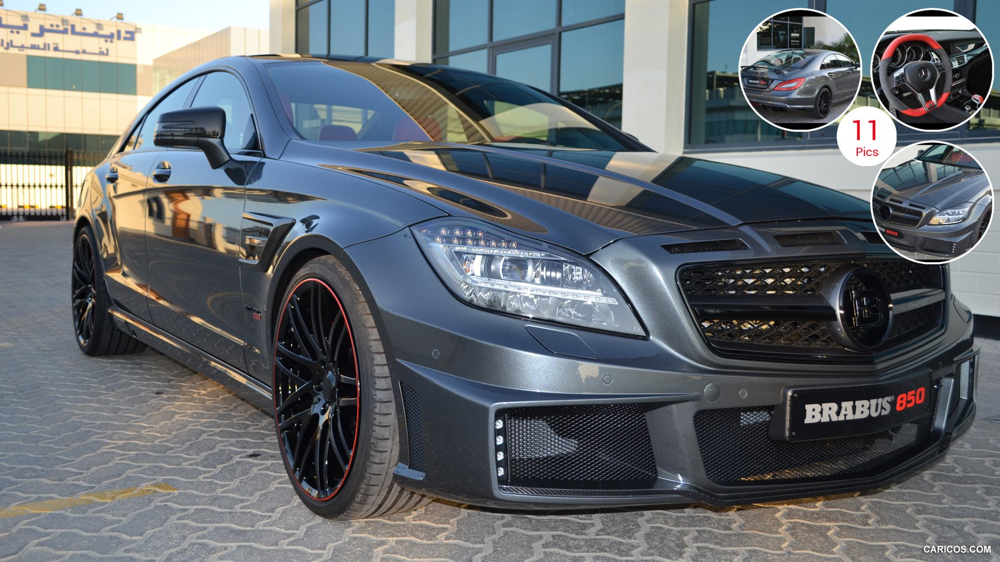
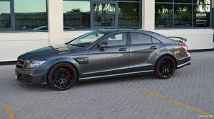

Mercedes-Benz
this car his car is the Mercedes-Benz CLS-Class BRABUS W218 Restyling CLS 63 AMG S 4MATIC. BRABUS carried out extensive performance tuning on this model. For example, with their “B63S-730” package, the original 5.5-liter V8 Bi-Turbo engine was upgraded to produce 730 horsepower and approximately 1,065 Nm of torque. In an even more extreme version, the BRABUS “850 6.0 Biturbo” package for the CLS 63 AMG delivers around 850 horsepower and an even higher level of torque.
 